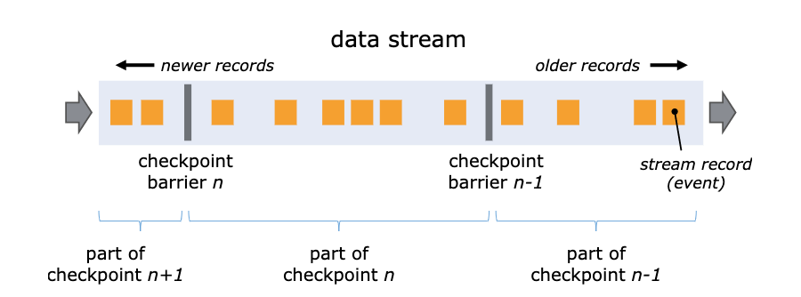
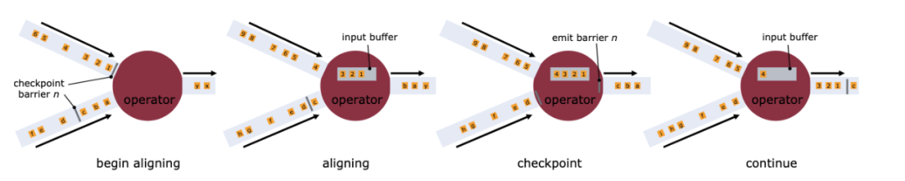
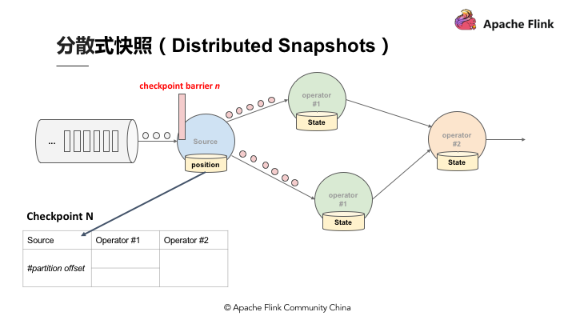
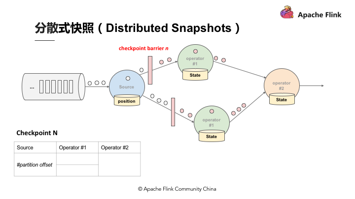
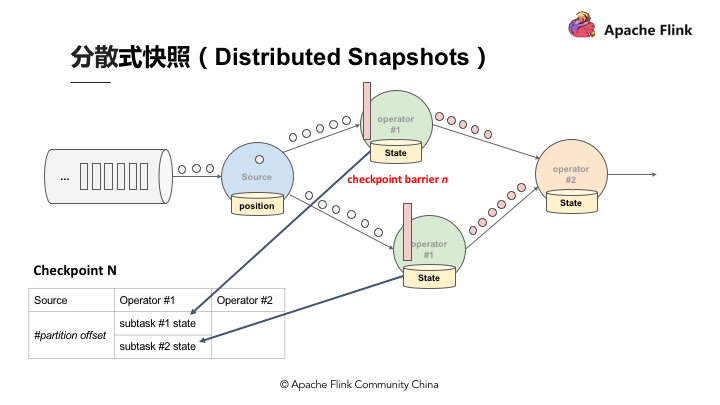

Ch08-Flink 之 Checkpoint
December 25, 2020
Checkpoint 属于一种机制，State + ABS(Asynchronouse Barrier Snapshot)。
Flink 的失败恢复依赖于 checkpoint 机制 + 可部分重发的数据源。
- 检查点机制机制：checkpoint 定期触发，产生快照（快照记录了检查点开始时数据源中消息的 offset 和所有有状态的 operator 的状态信息）
- 可部分重发的数据源：比如在 Apache Kafka 中，消费者可以从指定偏移量开始重新消费
1. Chandy-Lamport 算法 #
Chandy-Lamport 算法将分布式系统抽象成 DAG（暂时不考虑有闭环的图），节点表示进程，边表示两个进程间通信的管道。分布式快照的目的是记录下整个系统的状态，即可以分为节点的状态（进程的状态）和边的状态（信道的状态，即传输中的数据）。因为系统状态是由输入的消息序列驱动变化的，我们可以将输入的消息序列分为多个较短的子序列，图的每个节点或边先后处理完某个子序列后，都会进入同一个稳定的全局统状态。利用这个特性，系统的进程和信道在子序列的边界点分别进行本地快照，即使各部分的快照时间点不同，最终也可以组合成一个有意义的全局快照。
2. Flink Checkpoint #
从实现上看，Flink 通过在 DAG 数据源定时向数据流注入名为 Barrier 的特殊元素，将连续的数据流切分为多个有限序列，对应多个 Checkpoint 周期。每当接收到 Barrier，算子进行本地的 Checkpoint 快照，并在完成后异步上传本地快照，同时将 Barrier 以广播方式发送至下游。当某个 Checkpoint 的所有 Barrier 到达 DAG 末端且所有算子完成快照，则标志着全局快照的成功。下图中 Barrier N 代表着所有在这个范围里面的数据都是 Checkpoint barrier N。

在有多个输入 Channel 的情况下，为了数据准确性，算子会等待所有流的 Barrier 都到达之后才会开始本地的快照，这种机制被称为 Barrier 对齐。在对齐的过程中，算子只会继续处理的来自未出现 Barrier Channel 的数据，而其余 Channel 的数据会被写入输入队列，直至在队列满后被阻塞。当所有 Barrier 到达后，算子进行本地快照，输出 Barrier 到下游并恢复正常处理。

比起其他分布式快照，该算法的优势在于辅以 Copy-On-Write 技术的情况下不需要“Stop The World”影响应用吞吐量，同时基本不用持久化处理中的数据，只用保存进程的状态信息，大大减小了快照的大小。
3. 举例说明 #
假设现在需要产生 Checkpoint barrier N，但实际上在 Flink 中是由 Job manager 触发 Checkpoint，Checkpoint 被触发后开始从数据源产生 Checkpoint barrier。当 Job 开始做 Checkpoint barrier N 的时候，可以理解为 Checkpoint barrier N 需要逐步填充左下角的表格。

如图，当部分事件标为红色，Checkpoint barrier N 也是红色时，代表着这些数据或事件都由 Checkpoint barrier N 负责。Checkpoint barrier N 后面白色部分的数据或事件则不属于 Checkpoint barrier N。
在以上的基础上，当数据源收到 Checkpoint barrier N 之后会先将自己的状态保存，以读取 Kafka 资料为例，数据源的状态就是目前它在 Kafka 分区的位置，这个状态也会写入到上面提到的表格中。下游的 Operator 1 会开始运算属于 Checkpoint barrier N 的数据，当 Checkpoint barrier N 跟着这些数据流动到 Operator 1 之后，Operator 1 也将属于 Checkpoint barrier N 的所有数据都反映在状态中，当收到 Checkpoint barrier N 时也会直接对 Checkpoint 去做快照。

当快照完成后继续往下游走，Operator 2 也会接收到所有数据，然后搜索 Checkpoint barrier N 的数据并直接反映到状态，当状态收到 Checkpoint barrier N 之后也会直接写入到 Checkpoint N 中。以上过程到此可以看到 Checkpoint barrier N 已经完成了一个完整的表格，这个表格叫做 Distributed Snapshots，即分布式快照。分布式快照可以用来做状态容错，任何一个节点挂掉的时候可以在之前的 Checkpoint 中将其恢复。继续以上 Process，当多个 Checkpoint 同时进行，Checkpoint barrier N 已经流到 Job manager 2，Flink job manager 可以触发其他的 Checkpoint，比如 Checkpoint N + 1，Checkpoint N + 2 等等也同步进行，利用这种机制，可以在不阻挡运算的状况下持续地产生 Checkpoint。

4. Unaligned Checkpoint #
Flink 1.11 的 Unaligned Checkpoint 主要解决在高反压情况下作业难以完成 Checkpoint 的问题，同时它以磁盘资源为代价，避免了 Checkpoint 可能带来的阻塞，有利于提升 Flink 的资源利用率。随着流计算的普及，未来的 Flink 应用大概会越来越复杂，在未来经过实战打磨完善后 Unaligned Checkpoint 很有可能会取代 Aligned Checkpoint 成为 Flink 的默认 Checkpoint 策略。
Flink 1.11 Unaligned Checkpoint 解析